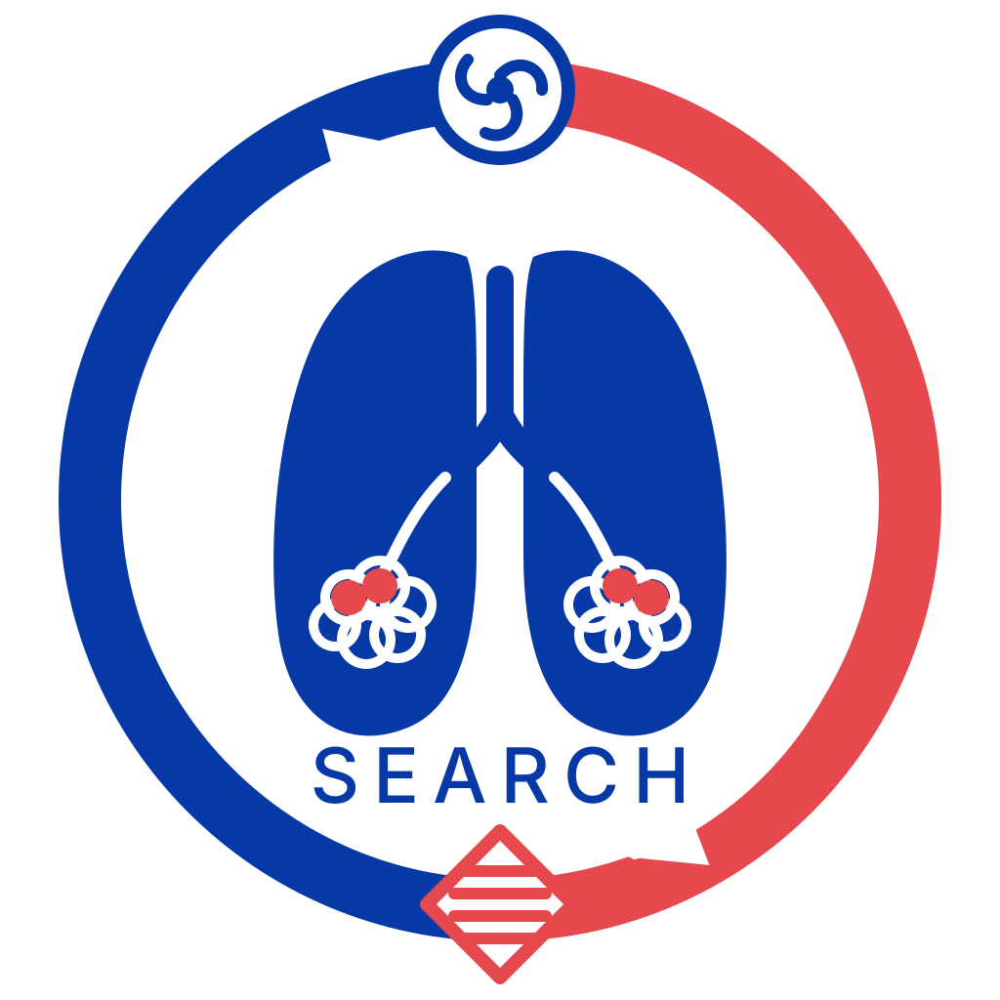

RESEARCH 0101
ARDS phenotypes & precision care
ARDS 炎症表型与精准通气
- 研究问题
- 相似临床诊断背后是否存在不同炎症状态、器官损伤与治疗反应？
- 研究方法
- 融合临床表型、血清蛋白组、胸部影像及随访结局，并结合肺损伤机制研究。
- 研究目标
- 识别可重复的生物学亚型，为糖皮质激素、PEEP 与修复策略评价提供依据。
代表成果2 篇

中国脓毒症和 ARDS 临床研究协作联盟（SEARCH） Sepsis and ARDS Research Collaborative Network of China (SEARCH)Research questions · Evidence · Translation
围绕 ARDS、脓毒症与多器官功能障碍的异质性，SEARCH 将研究问题、队列方法和代表成果连接成一条可追溯的证据路径。
ARDS phenotypes & precision care
Immune & metabolic remodeling
Multimodal early warning
Multicenter translation
Five-year publication ledger · 2022–2026
在四条研究主线之外，集中呈现团队近五年的代表性论文，作为持续研究工作的年度总表。
来源：团队提供的《代表性论文》文档及新增中文期刊文章；按 2022–2026 年筛选，共 17 篇。页面不展示期刊影响因子。
Translational pathway
论文是研究路径上的阶段性证据，而不是孤立的成果清单。
从诊疗困境与治疗反应差异中定义问题。
统一入组、采样、随访与质量控制。
融合临床、影像和多组学信息。
回到多中心临床环境检验稳定性。
SEARCH / RESEARCH INDEX / 2026
Evidence matrix
横向比较每条研究主线的问题、方法和代表论文，适合快速判断团队的研究结构与合作切入点。
不同炎症亚型是否具有不同预后与治疗反应？
免疫激活与免疫抑制如何共同影响疾病进展？
如何更早识别高风险患者并动态评价疗效？
研究发现能否跨地区、跨中心稳定复现？